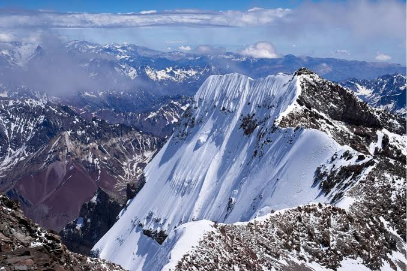
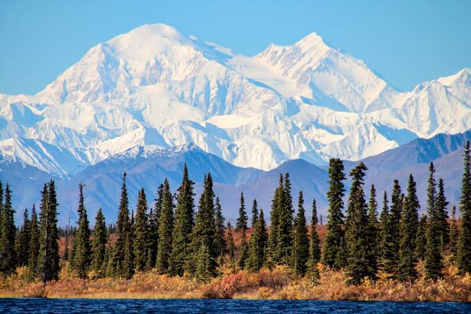
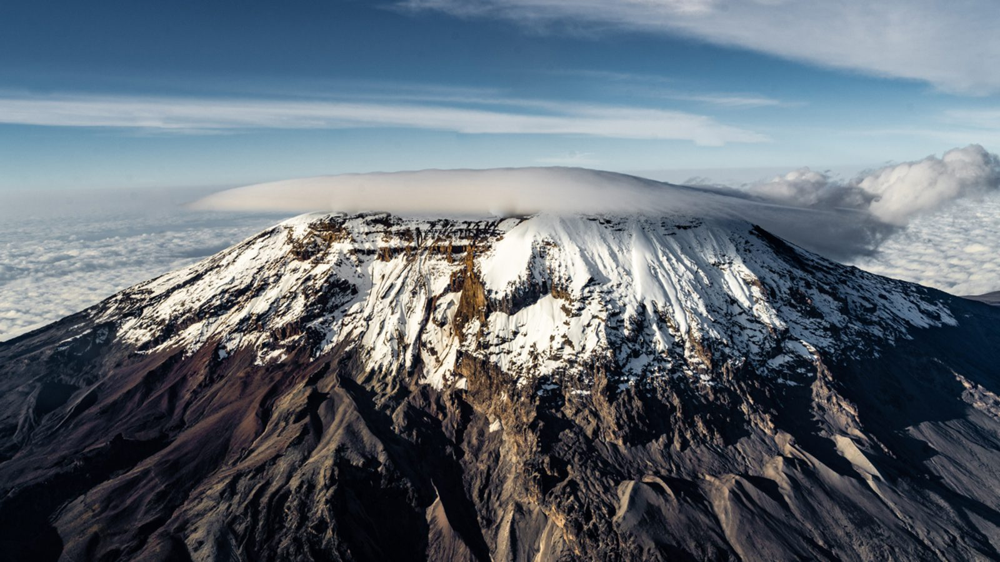
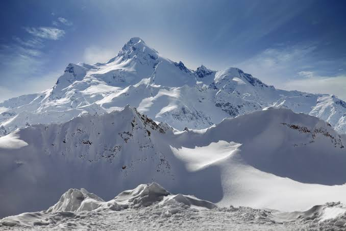
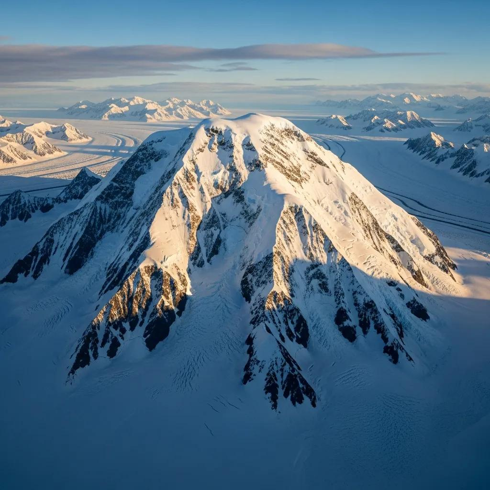
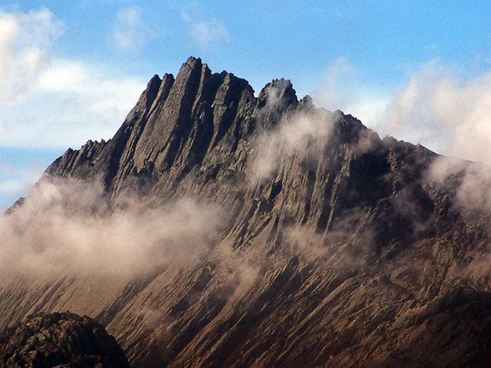

Alpine Climbing
Climbing mountains using a combination of rock, snow and ice climbing techniques.
Routes often take one to several days and need an early start, careful weather planning and the ability to move quickly on mixed terrain.
START HERE
Mountaineering is not one single activity. A weekend hike to a high viewpoint, a roped climb up a rock wall and a two-month expedition to a Himalayan peak all fall under the same umbrella, but they ask for very different skills, gear and experience.
Most climbers build up gradually. They begin with hiking, add scrambling and rock climbing, learn snow and ice skills, and only then move on to alpine and expedition objectives. The sections below describe each style and what it involves.
CHOOSE YOUR CHALLENGE
Climbing mountains using a combination of rock, snow and ice climbing techniques.
Routes often take one to several days and need an early start, careful weather planning and the ability to move quickly on mixed terrain.

Climbing frozen waterfalls, glaciers and steep ice formations.
Climbers swing two ice tools and kick the front points of their crampons into the ice, placing screws for protection along the way.
Climbing natural rock formations using ropes, harnesses and protection equipment.
It includes sport climbing with fixed bolts, traditional climbing with removable gear, and bouldering without a rope close to the ground.

Long-duration mountain expeditions requiring extensive planning and logistics.
Teams set up a series of camps, carry supplies up the mountain in stages and spend weeks adapting to the altitude before a summit attempt.

Walking on trails to mountain passes, base camps and high viewpoints with little or no technical gear.
It is the best way to build fitness, learn navigation and get used to being in the mountains.

Moving over steep, rocky ground using hands for balance and progress, usually without a rope.
It sits between hiking and rock climbing, and many classic ridge routes are scrambles.

Climbing a mountain on skis fitted with climbing skins, then skiing down the other side.
It covers ground quickly but needs strong skiing skills and solid avalanche knowledge, including the use of a beacon, probe and shovel.

Climbing very tall cliffs that take several days, sleeping on the wall in hanging tents called portaledges.
Climbers haul their food, water and gear up the wall in a bag, and rely on careful rope management.
ONE PEAK PER CONTINENT
The Seven Summits challenge is to climb the highest peak on each continent. It is popular because the mountains range from a non-technical walk-up to serious expedition climbs.

Asia, 8,849 m. The highest mountain in the world.

South America, 6,961 m. A high-altitude trek without major technical climbing.

North America, 6,190 m. Very cold, with long glacier travel and heavy loads.

Africa, 5,895 m. A walk-up volcano where altitude is the main challenge.

Europe, 5,642 m. A snow and glacier climb in the Caucasus.

Antarctica, 4,892 m. Remote and extremely cold, reached by special flights.

Oceania, 4,884 m. A technical rock climb. Some lists use Mount Kosciuszko instead.
HOW ROUTES ARE RATED
Climbers use grades to describe how hard a route is. Systems differ between countries and between types of climbing, so always check which system a guidebook uses.
Used in North America for rock. Class 1 is walking, Class 5 is roped climbing, and Class 5 is split from 5.0 up to 5.15.
Rates overall difficulty of a mountain route from F (facile) through PD, AD, D, TD and ED to ABO.
Frozen waterfalls are rated WI1 for low-angle ice up to WI7 for sustained vertical or overhanging ice.
TWO WAYS TO CLIMB A BIG PEAK
A larger team builds camps, fixes ropes and moves supplies up the mountain in stages. It is slower but gives more support and a safer retreat.
A small team carries everything it needs and climbs the route in one push without fixed ropes or camps. It is fast but demands great skill and fitness.
FIND YOUR FIT
Start with hiking and trekking. Learn navigation, layering and pacing on trails.
Try scrambling and indoor or outdoor rock climbing. Take a rope-handling course.
Join a guided glacier or basic mountaineering course to learn crampons, ice axe and crevasse rescue.
Move on to alpine routes, ski mountaineering or high-altitude expeditions with a strong partner or guide.
QUICK ANSWERS
Hiking and trekking. They need the least equipment and training, and they teach navigation, pacing and weather awareness.
It helps a lot. Alpine routes often include rock sections, and comfort with ropes and movement on steep ground makes them safer.
Climbing often refers to a specific route, such as a rock wall. Mountaineering includes the whole journey to a summit, including approaches, camps, snow and ice, and weather decisions.
No. It is the highest, but many lower peaks are much more technical. K2 and Annapurna I are widely considered more dangerous.